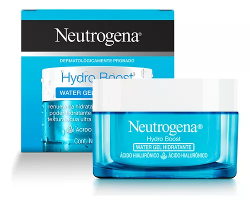
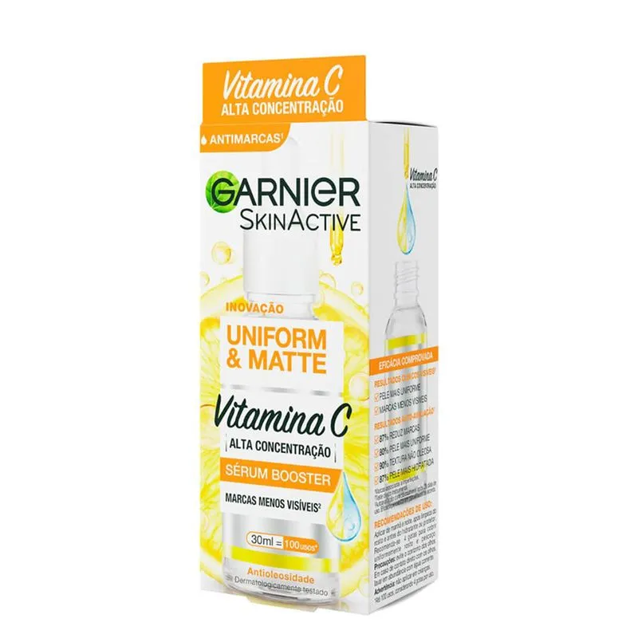
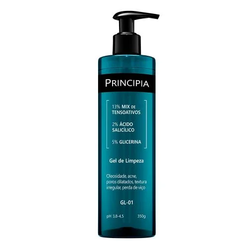
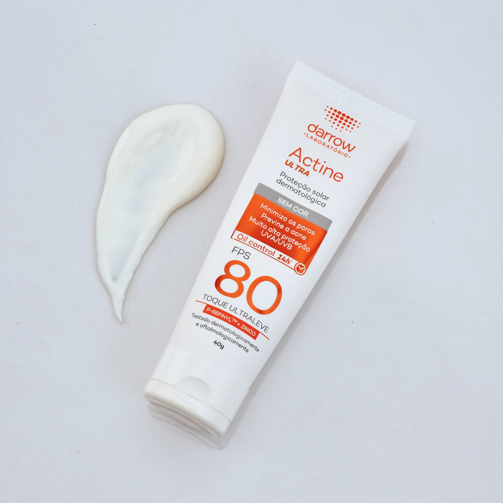

Qual a ordem dos meus produtos de skincare? Por onde começar:
- Limpeza: O primeiro passo sempre será a limpeza da pele, removendo resíduos de maquiagem e sujeira do dia a dia.
- Hidratação (Séruns e Produtos Aquosos): Logo após a limpeza, é extremamente importante hidratar a pele. Recomendamos iniciar com séruns leves e aquosos para melhor absorção dos componentes.
- Filtro Solar: O filtro solar deve sempre ser o último passo da sua rotina de skincare. Ele cria uma barreira protetora contra os raios UV, impedindo a pele de absorver produtos aplicados por cima. Use o filtro solar apenas na rotina diurna, pois é durante o dia que estamos expostos à radiação UV.
- Lábios Hidratados: Manter os lábios hidratados durante todo o dia é essencial, especialmente no inverno.
- Maquiagem: Último passo, mas não menos importante... A maquiagem traz confiança e permite você se transformar na sua melhor versão.
- TABELA DE PRODUTOS ESSENCIAIS -
| Hidratante | Sérum (Vitamina C) | Sabonete Facial | Protetor Solar |
|---|---|---|---|
|  |  |  |  |
- Preços (Média) -
| Hidratante | Sérum (Vitamina C) | Sabonete Facial | Protetor Solar |
|---|---|---|---|
| R$50,00 | R$59,90 | R$44,00 | R$70,00 |
Acesse abaixo links para a compra dos produtos:
Hidratante Facial Neutrogena Hydro Boost Water Gel 50g
Sérum Facial Antimarcas Garnier Uniform & Matte Vitamina C, 30ml
Gel de Limpeza Principia 2% Ácido Salicílico + 5% Glicerina com 350g
Actine - Protetor Solar Ultra Fps80
⋆ ESPERO QUE TENHA GOSTADO ⋆
Vale lembrar que aqui estão algumas dicas, então para um resultado mais preciso ou em caso de sintomas CONSULTE UM DERMATOLOGISTA!!!